Calibration of the Chaboche mecanical model¶
Deterministic model¶
The Chaboche mecanical law predicts the stress depending on the strain:
where
 is the strain,
is the strain, is the stress (Pa),
is the stress (Pa), ,
,  ,
,  are the parameters.
are the parameters.
The variables have the following distributions and are supposed to be independent.
Random var. |
Distribution |
|---|---|
|
Lognormal ( MPa, ) |
|
Normal ( MPa, ) |
|
Normal (, ) |
|
Uniform(a=0, b=0.07). |
Observations¶
In order to create a calibration problem, we make the hypothesis that the strain has the following distribution:
Moreover, we consider a gaussian noise on the observed constraint:
and we make the hypothesis that the observation errors are independent. We set the number of observations to:

We generate a Monte-Carlo samplg with size  :
:
for  . The observations are the pairs , i.e. each observation is a couple made of the strain and the corresponding stress.
. The observations are the pairs , i.e. each observation is a couple made of the strain and the corresponding stress.
Thanks to¶
Antoine Dumas, Phimeca
References¶
Lemaitre and J. L. Chaboche (2002) “Mechanics of solid materials” Cambridge University Press.
Generate the observations¶
[1]:
import numpy as np
import openturns as ot
Define the model.
[2]:
def modelChaboche(X):
strain,R,C,gamma = X
stress = R + C*(1-np.exp(-gamma*strain))
return [stress]
Create the Python function.
[3]:
g = ot.PythonFunction(4, 1, modelChaboche)
Define the random vector.
[4]:
Strain = ot.Uniform(0,0.07)
unknownR = 750e6
unknownC = 2750e6
unknownGamma = 10
R = ot.Dirac(unknownR)
C = ot.Dirac(unknownC)
Gamma = ot.Dirac(unknownGamma)
Strain.setDescription(["Strain"])
R.setDescription(["R"])
C.setDescription(["C"])
Gamma.setDescription(["Gamma"])
Create the joint input distribution function.
[5]:
inputRandomVector = ot.ComposedDistribution([Strain, R, C, Gamma])
Create the Monte-Carlo sample.
[6]:
sampleSize = 100
inputSample = inputRandomVector.getSample(sampleSize)
outputStress = g(inputSample)
outputStress[0:5]
[6]:
| y0 | |
|---|---|
| 0 | 1730517161.8555112 |
| 1 | 2017637268.4224534 |
| 2 | 998457688.8730125 |
| 3 | 811861394.6134877 |
| 4 | 1343123774.9833345 |
Plot the histogram of the output.
[7]:
histoGraph = ot.HistogramFactory().build(outputStress/1.e6).drawPDF()
histoGraph.setTitle("Histogram of the sample stress")
histoGraph.setXTitle("Stress (MPa)")
histoGraph.setLegends([""])
histoGraph
[7]:
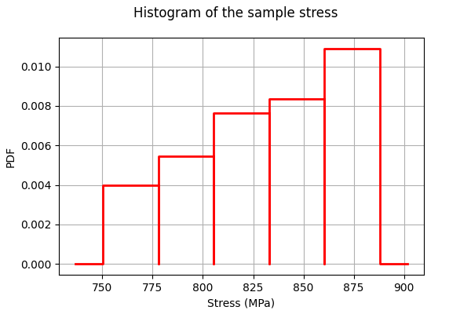
Generate observation noise.
[8]:
stressObservationNoiseSigma = 40.e6 # (Pa)
noiseSigma = ot.Normal(0.,stressObservationNoiseSigma)
sampleNoiseH = noiseSigma.getSample(sampleSize)
observedStress = outputStress + sampleNoiseH
[9]:
observedStrain = inputSample[:,0]
[10]:
graph = ot.Graph("Observations","Strain","Stress (MPa)",True)
cloud = ot.Cloud(observedStrain,observedStress/1.e6)
graph.add(cloud)
graph
[10]:
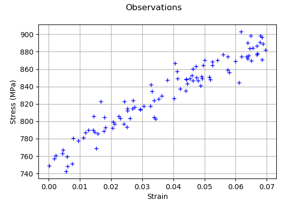
A calibration analysis class¶
[11]:
"""
A graphics class to analyze the results of calibration.
"""
import pylab as pl
import openturns as ot
import openturns.viewer as otv
class CalibrationAnalysis:
def __init__(self,calibrationResult,model,inputObservations,outputObservations):
"""
Plots the prior and posterior distribution of the calibrated parameter theta.
Parameters
----------
calibrationResult : :class:`~openturns.calibrationResult`
The result of a calibration.
model : 2-d sequence of float
The function to calibrate.
inputObservations : :class:`~openturns.Sample`
The sample of input values of the model linked to the observations.
outputObservations : 2-d sequence of float
The sample of output values of the model linked to the observations.
"""
self.model = model
self.outputAtPrior = None
self.outputAtPosterior = None
self.calibrationResult = calibrationResult
self.observationColor = "blue"
self.priorColor = "red"
self.posteriorColor = "green"
self.inputObservations = inputObservations
self.outputObservations = outputObservations
self.unitlength = 6 # inch
# Compute yAtPrior
meanPrior = calibrationResult.getParameterPrior().getMean()
model.setParameter(meanPrior)
self.outputAtPrior=model(inputObservations)
# Compute yAtPosterior
meanPosterior = calibrationResult.getParameterPosterior().getMean()
model.setParameter(meanPosterior)
self.outputAtPosterior=model(inputObservations)
return None
def drawParameterDistributions(self):
"""
Plots the prior and posterior distribution of the calibrated parameter theta.
"""
thetaPrior = self.calibrationResult.getParameterPrior()
thetaDescription = thetaPrior.getDescription()
thetaPosterior = self.calibrationResult.getParameterPosterior()
thetaDim = thetaPosterior.getDimension()
fig = pl.figure(figsize=(12, 4))
for i in range(thetaDim):
graph = ot.Graph("",thetaDescription[i],"PDF",True,"topright")
# Prior distribution
thetaPrior_i = thetaPrior.getMarginal(i)
priorPDF = thetaPrior_i.drawPDF()
priorPDF.setColors([self.priorColor])
priorPDF.setLegends(["Prior"])
graph.add(priorPDF)
# Posterior distribution
thetaPosterior_i = thetaPosterior.getMarginal(i)
postPDF = thetaPosterior_i.drawPDF()
postPDF.setColors([self.posteriorColor])
postPDF.setLegends(["Posterior"])
graph.add(postPDF)
'''
If the prior is a Dirac, set the vertical axis bounds to the posterior.
Otherwise, the Dirac set to [0,1], where the 1 can be much larger
than the maximum PDF of the posterior.
'''
if (thetaPrior_i.getName()=="Dirac"):
# The vertical (PDF) bounds of the posterior
postbb = postPDF.getBoundingBox()
pdf_upper = postbb.getUpperBound()[1]
pdf_lower = postbb.getLowerBound()[1]
# Set these bounds to the graph
bb = graph.getBoundingBox()
graph_upper = bb.getUpperBound()
graph_upper[1] = pdf_upper
bb.setUpperBound(graph_upper)
graph_lower = bb.getLowerBound()
graph_lower[1] = pdf_lower
bb.setLowerBound(graph_lower)
graph.setBoundingBox(bb)
# Add it to the graphics
ax = fig.add_subplot(1, thetaDim, i+1)
_ = otv.View(graph, figure=fig, axes=[ax])
return fig
def drawObservationsVsPredictions(self):
"""
Plots the output of the model depending
on the output observations before and after calibration.
"""
ySize = self.outputObservations.getSize()
yDim = self.outputObservations.getDimension()
graph = ot.Graph("","Observations","Predictions",True,"topleft")
# Plot the diagonal
if (yDim==1):
graph = self._drawObservationsVsPredictions1Dimension(self.outputObservations,self.outputAtPrior,self.outputAtPosterior)
elif (ySize==1):
outputObservations = ot.Sample(self.outputObservations[0],1)
outputAtPrior = ot.Sample(self.outputAtPrior[0],1)
outputAtPosterior = ot.Sample(self.outputAtPosterior[0],1)
graph = self._drawObservationsVsPredictions1Dimension(outputObservations,outputAtPrior,outputAtPosterior)
else:
fig = pl.figure(figsize=(self.unitlength*yDim, self.unitlength))
for i in range(yDim):
outputObservations = self.outputObservations[:,i]
outputAtPrior = self.outputAtPrior[:,i]
outputAtPosterior = self.outputAtPosterior[:,i]
graph = self._drawObservationsVsPredictions1Dimension(outputObservations,outputAtPrior,outputAtPosterior)
ax = fig.add_subplot(1, yDim, i+1)
_ = otv.View(graph, figure=fig, axes=[ax])
return graph
def _drawObservationsVsPredictions1Dimension(self,outputObservations,outputAtPrior,outputAtPosterior):
"""
Plots the output of the model depending
on the output observations before and after calibration.
Can manage only 1D samples.
"""
yDim = outputObservations.getDimension()
ydescription = outputObservations.getDescription()
xlabel = "%s Observations" % (ydescription[0])
ylabel = "%s Predictions" % (ydescription[0])
graph = ot.Graph("",xlabel,ylabel,True,"topleft")
# Plot the diagonal
if (yDim==1):
curve = ot.Curve(outputObservations, outputObservations)
curve.setColor(self.observationColor)
graph.add(curve)
else:
raise TypeError('Output observations are not 1D.')
# Plot the predictions before
yPriorDim = outputAtPrior.getDimension()
if (yPriorDim==1):
cloud = ot.Cloud(outputObservations, outputAtPrior)
cloud.setColor(self.priorColor)
cloud.setLegend("Prior")
graph.add(cloud)
else:
raise TypeError('Output prior predictions are not 1D.')
# Plot the predictions after
yPosteriorDim = outputAtPosterior.getDimension()
if (yPosteriorDim==1):
cloud = ot.Cloud(outputObservations, outputAtPosterior)
cloud.setColor(self.posteriorColor)
cloud.setLegend("Posterior")
graph.add(cloud)
else:
raise TypeError('Output posterior predictions are not 1D.')
return graph
def drawResiduals(self):
"""
Plot the distribution of the residuals and
the distribution of the observation errors.
"""
ySize = self.outputObservations.getSize()
yDim = self.outputObservations.getDimension()
yPriorSize = self.outputAtPrior.getSize()
yPriorDim = self.outputAtPrior.getDimension()
if (yDim==1):
observationsError = self.calibrationResult.getObservationsError()
graph = self._drawResiduals1Dimension(self.outputObservations,self.outputAtPrior,self.outputAtPosterior,observationsError)
elif (ySize==1):
outputObservations = ot.Sample(self.outputObservations[0],1)
outputAtPrior = ot.Sample(self.outputAtPrior[0],1)
outputAtPosterior = ot.Sample(self.outputAtPosterior[0],1)
observationsError = self.calibrationResult.getObservationsError()
# In this case, we cannot draw observationsError ; just
# pass the required input argument, but it is not actually used.
graph = self._drawResiduals1Dimension(outputObservations,outputAtPrior,outputAtPosterior,observationsError)
else:
observationsError = self.calibrationResult.getObservationsError()
fig = pl.figure(figsize=(self.unitlength*yDim, self.unitlength))
for i in range(yDim):
outputObservations = self.outputObservations[:,i]
outputAtPrior = self.outputAtPrior[:,i]
outputAtPosterior = self.outputAtPosterior[:,i]
observationsErrorYi = observationsError.getMarginal(i)
graph = self._drawResiduals1Dimension(outputObservations,outputAtPrior,outputAtPosterior,observationsErrorYi)
ax = fig.add_subplot(1, yDim, i+1)
_ = otv.View(graph, figure=fig, axes=[ax])
return graph
def _drawResiduals1Dimension(self,outputObservations,outputAtPrior,outputAtPosterior,observationsError):
"""
Plot the distribution of the residuals and
the distribution of the observation errors.
Can manage only 1D samples.
"""
ydescription = outputObservations.getDescription()
xlabel = "%s Residuals" % (ydescription[0])
graph = ot.Graph("Residuals analysis",xlabel,"Probability distribution function",True,"topright")
yDim = outputObservations.getDimension()
yPriorDim = outputAtPrior.getDimension()
yPosteriorDim = outputAtPrior.getDimension()
if (yDim==1) and (yPriorDim==1) :
posteriorResiduals = outputObservations - outputAtPrior
kernel = ot.KernelSmoothing()
fittedDist = kernel.build(posteriorResiduals)
residualPDF = fittedDist.drawPDF()
residualPDF.setColors([self.priorColor])
residualPDF.setLegends(["Prior"])
graph.add(residualPDF)
else:
raise TypeError('Output prior observations are not 1D.')
if (yDim==1) and (yPosteriorDim==1) :
posteriorResiduals = outputObservations - outputAtPosterior
kernel = ot.KernelSmoothing()
fittedDist = kernel.build(posteriorResiduals)
residualPDF = fittedDist.drawPDF()
residualPDF.setColors([self.posteriorColor])
residualPDF.setLegends(["Posterior"])
graph.add(residualPDF)
else:
raise TypeError('Output posterior observations are not 1D.')
# Plot the distribution of the observation errors
if (observationsError.getDimension()==1):
# In the other case, we just do not plot
obserrgraph = observationsError.drawPDF()
obserrgraph.setColors([self.observationColor])
obserrgraph.setLegends(["Observation errors"])
graph.add(obserrgraph)
return graph
def drawObservationsVsInputs(self):
"""
Plots the observed output of the model depending
on the observed input before and after calibration.
"""
xSize = self.inputObservations.getSize()
ySize = self.outputObservations.getSize()
xDim = self.inputObservations.getDimension()
yDim = self.outputObservations.getDimension()
xdescription = self.inputObservations.getDescription()
ydescription = self.outputObservations.getDescription()
# Observations
if (xDim==1) and (yDim==1):
graph = self._drawObservationsVsInputs1Dimension(self.inputObservations,self.outputObservations,self.outputAtPrior,self.outputAtPosterior)
elif (xSize==1) and (ySize==1):
inputObservations = ot.Sample(self.inputObservations[0],1)
outputObservations = ot.Sample(self.outputObservations[0],1)
outputAtPrior = ot.Sample(self.outputAtPrior[0],1)
outputAtPosterior = ot.Sample(self.outputAtPosterior[0],1)
graph = self._drawObservationsVsInputs1Dimension(inputObservations,outputObservations,outputAtPrior,outputAtPosterior)
else:
fig = pl.figure(figsize=(xDim*self.unitlength, yDim*self.unitlength))
for i in range(xDim):
for j in range(yDim):
k = xDim * j + i
inputObservations = self.inputObservations[:,i]
outputObservations = self.outputObservations[:,j]
outputAtPrior = self.outputAtPrior[:,j]
outputAtPosterior = self.outputAtPosterior[:,j]
graph = self._drawObservationsVsInputs1Dimension(inputObservations,outputObservations,outputAtPrior,outputAtPosterior)
ax = fig.add_subplot(yDim, xDim, k+1)
_ = otv.View(graph, figure=fig, axes=[ax])
return graph
def _drawObservationsVsInputs1Dimension(self,inputObservations,outputObservations,outputAtPrior,outputAtPosterior):
"""
Plots the observed output of the model depending
on the observed input before and after calibration.
Can manage only 1D samples.
"""
xDim = inputObservations.getDimension()
if (xDim!=1):
raise TypeError('Input observations are not 1D.')
yDim = outputObservations.getDimension()
xdescription = inputObservations.getDescription()
ydescription = outputObservations.getDescription()
graph = ot.Graph("",xdescription[0],ydescription[0],True,"topright")
# Observations
if (yDim==1):
cloud = ot.Cloud(inputObservations,outputObservations)
cloud.setColor(self.observationColor)
cloud.setLegend("Observations")
graph.add(cloud)
else:
raise TypeError('Output observations are not 1D.')
# Model outputs before calibration
yPriorDim = outputAtPrior.getDimension()
if (yPriorDim==1):
cloud = ot.Cloud(inputObservations,outputAtPrior)
cloud.setColor(self.priorColor)
cloud.setLegend("Prior")
graph.add(cloud)
else:
raise TypeError('Output prior predictions are not 1D.')
# Model outputs after calibration
yPosteriorDim = outputAtPosterior.getDimension()
if (yPosteriorDim==1):
cloud = ot.Cloud(inputObservations,outputAtPosterior)
cloud.setColor(self.posteriorColor)
cloud.setLegend("Posterior")
graph.add(cloud)
else:
raise TypeError('Output posterior predictions are not 1D.')
return graph
Set the calibration parameters¶
Define the value of the reference values of the  parameter. In the bayesian framework, this is called the mean of the prior gaussian distribution. In the data assimilation framework, this is called the background.
parameter. In the bayesian framework, this is called the mean of the prior gaussian distribution. In the data assimilation framework, this is called the background.
[12]:
R = 700e6 # Exact : 750e6
C = 2500e6 # Exact : 2750e6
Gamma = 8. # Exact : 10
thetaPrior = ot.Point([R,C,Gamma])
The following statement create the calibrated function from the model. The calibrated parameters Ks, Zv, Zm are at indices 1, 2, 3 in the inputs arguments of the model.
[13]:
calibratedIndices = [1,2,3]
mycf = ot.ParametricFunction(g, calibratedIndices, thetaPrior)
Calibration with linear least squares¶
The LinearLeastSquaresCalibration class performs the linear least squares calibration by linearizing the model in the neighbourhood of the reference point.
[14]:
algo = ot.LinearLeastSquaresCalibration(mycf, observedStrain, observedStress, thetaPrior,"SVD")
The run method computes the solution of the problem.
[15]:
algo.run()
[16]:
calibrationResult = algo.getResult()
Analysis of the results¶
The getParameterMAP method returns the maximum of the posterior distribution of .
[17]:
thetaMAP = calibrationResult.getParameterMAP()
thetaMAP
[17]:
[7.46352e+08,2.71632e+09,10.2126]
We can compute a 95% confidence interval of the parameter  .
.
[18]:
thetaPosterior = calibrationResult.getParameterPosterior()
thetaPosterior.computeBilateralConfidenceIntervalWithMarginalProbability(0.95)[0]
[18]:
[7.10731e+08, 7.81973e+08]
[1.93186e+09, 3.50079e+09]
[-774.441, 794.867]
We can see that all three parameters are estimated with a large confidence interval.
[19]:
mypcr = CalibrationAnalysis(calibrationResult, mycf, observedStrain, observedStress)
[20]:
graph = mypcr.drawObservationsVsInputs()
graph.setLegendPosition("topleft")
graph
[20]:
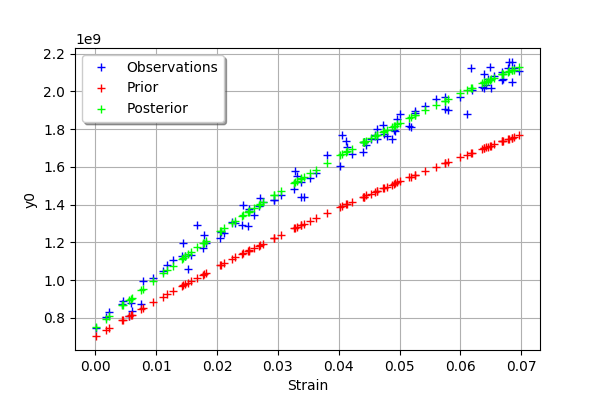
We see that there is a good fit after calibration, since the predictions after calibration (i.e. the green crosses) are close to the observations (i.e. the blue crosses).
[21]:
mypcr.drawObservationsVsPredictions()
[21]:
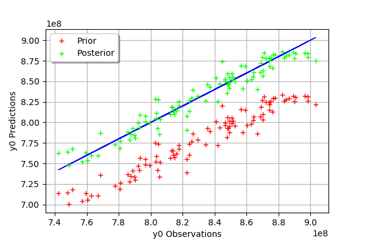
We see that there is a much better fit after calibration, since the predictions are close to the diagonal of the graphics.
[22]:
observationError = calibrationResult.getObservationsError()
observationError
[22]:
Normal(mu = 0, sigma = 4.4426e+07)
[23]:
graph = mypcr.drawResiduals()
graph.setLegendPosition("topleft")
graph
[23]:
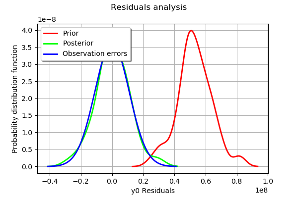
The analysis of the residuals shows that the distribution is centered on zero and symmetric. This indicates that the calibration performed well.
Moreover, the distribution of the residuals is close to being gaussian.
[24]:
_ = mypcr.drawParameterDistributions()
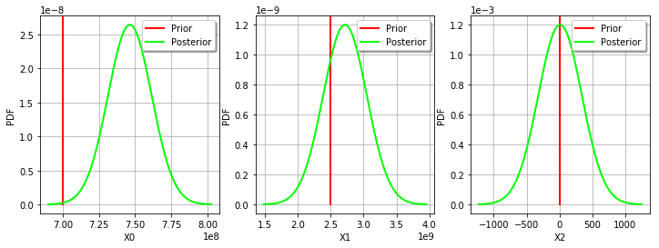
Calibration with nonlinear least squares¶
The NonLinearLeastSquaresCalibration class performs the non linear least squares calibration by minimizing the squared euclidian norm between the predictions and the observations.
[25]:
algo = ot.NonLinearLeastSquaresCalibration(mycf, observedStrain, observedStress, thetaPrior)
The run method computes the solution of the problem.
[26]:
algo.run()
[27]:
calibrationResult = algo.getResult()
Analysis of the results¶
The getParameterMAP method returns the maximum of the posterior distribution of .
[28]:
thetaMAP = calibrationResult.getParameterMAP()
thetaMAP
[28]:
[7.46745e+08,2.82138e+09,9.65458]
We can compute a 95% confidence interval of the parameter .
[29]:
thetaPosterior = calibrationResult.getParameterPosterior()
thetaPosterior.computeBilateralConfidenceIntervalWithMarginalProbability(0.95)[0]
[29]:
[7.11003e+08, 7.79964e+08]
[2.31024e+09, 3.38452e+09]
[7.35939, 12.9378]
We can see that all three parameters are estimated with a large confidence interval.
[30]:
mypcr = CalibrationAnalysis(calibrationResult,mycf, observedStrain, observedStress)
[31]:
graph = mypcr.drawObservationsVsInputs()
graph.setLegendPosition("topleft")
graph
[31]:
We see that there is a good fit after calibration, since the predictions after calibration (i.e. the green crosses) are close to the observations (i.e. the blue crosses).
[32]:
mypcr.drawObservationsVsPredictions()
[32]:
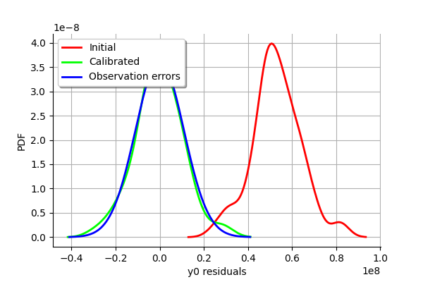
We see that there is a much better fit after calibration, since the predictions are close to the diagonal of the graphics.
[33]:
observationError = calibrationResult.getObservationsError()
observationError
[33]:
Normal(mu = -37300.8, sigma = 4.39724e+07)
[34]:
observationError.drawPDF()
[34]:
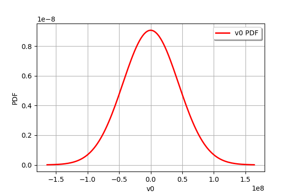
[35]:
graph = mypcr.drawResiduals()
graph.setLegendPosition("topleft")
graph
[35]:

The analysis of the residuals shows that the distribution is centered on zero and symmetric. This indicates that the calibration performed well.
Moreover, the distribution of the residuals is close to being gaussian. This indicates that the observation error might be gaussian.
[36]:
_ = mypcr.drawParameterDistributions()
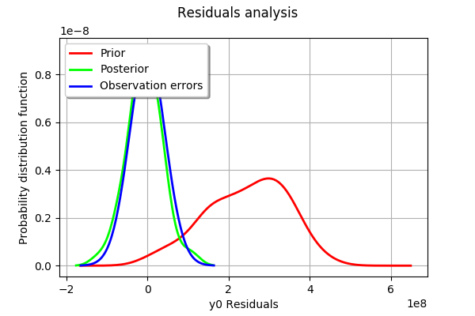
Gaussian calibration parameters¶
The standard deviation of the observations errors.
[37]:
sigmaStress = 1.e7 # (Pa)
Define the covariance matrix of the output Y of the model.
[38]:
errorCovariance = ot.CovarianceMatrix(1)
errorCovariance[0,0] = sigmaStress**2
Define the covariance matrix of the parameters to calibrate.
[39]:
sigmaR = 0.1 * R
sigmaC = 0.1 * C
sigmaGamma = 0.1 * Gamma
[40]:
sigma = ot.CovarianceMatrix(3)
sigma[0,0] = sigmaR**2
sigma[1,1] = sigmaC**2
sigma[2,2] = sigmaGamma**2
sigma
[40]:
[[ 4.9e+15 0 0 ]
[ 0 6.25e+16 0 ]
[ 0 0 0.64 ]]
Gaussian linear calibration¶
The GaussianLinearCalibration class performs the gaussian linear calibration by linearizing the model in the neighbourhood of the prior.
[41]:
algo = ot.GaussianLinearCalibration(mycf, observedStrain, observedStress, thetaPrior, sigma, errorCovariance)
The run method computes the solution of the problem.
[42]:
algo.run()
[43]:
calibrationResult = algo.getResult()
Analysis of the results¶
The getParameterMAP method returns the maximum of the posterior distribution of .
[44]:
thetaMAP = calibrationResult.getParameterMAP()
thetaMAP
[44]:
[7e+08,2.5e+09,11.6727]
We can compute a 95% confidence interval of the parameter .
[45]:
thetaPosterior = calibrationResult.getParameterPosterior()
thetaPosterior.computeBilateralConfidenceIntervalWithMarginalProbability(0.95)[0]
[45]:
[5.45374e+08, 8.54626e+08]
[1.94776e+09, 3.05224e+09]
[8.69845, 14.647]
We can see that all three parameters are estimated with a large confidence interval.
[46]:
mypcr = CalibrationAnalysis(calibrationResult,mycf,observedStrain, observedStress)
[47]:
graph = mypcr.drawObservationsVsInputs()
graph.setLegendPosition("topleft")
graph
[47]:

We see that there is a good fit after calibration, since the predictions after calibration (i.e. the green crosses) are close to the observations (i.e. the blue crosses).
[48]:
mypcr.drawObservationsVsPredictions()
[48]:
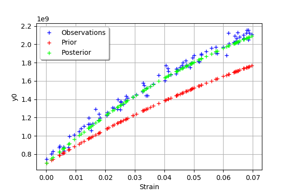
We see that there is a much better fit after calibration, since the predictions are close to the diagonal of the graphics.
The observation error is predicted by linearizing the problem at the prior.
[49]:
observationError = calibrationResult.getObservationsError()
observationError
[49]:
Normal(mu = 0, sigma = 1e+07)
This can be compared to the residuals distribution, which is computed at the posterior.
[50]:
graph = mypcr.drawResiduals()
graph.setLegendPosition("topleft")
graph
[50]:
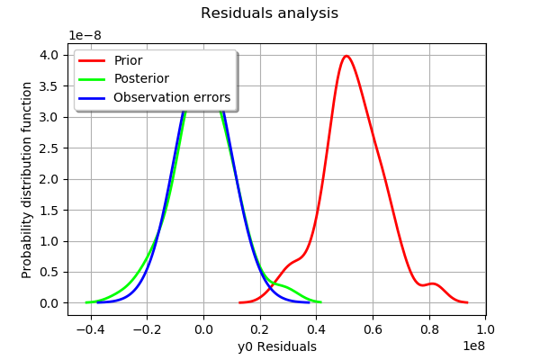
The analysis of the distribution of the residuals (the blue line) shows that the distribution is centered on zero and symmetric. This indicates that the calibration performed well. Moreover, the distribution of the residuals is close to being gaussian.
The observation error distribution (in green) is much narrower than the actual residuals distribution. This shows that the prior observations error underestimated the actual error distribution.
[51]:
_ = mypcr.drawParameterDistributions()
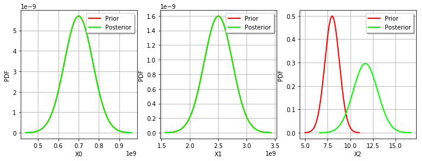
We see that the prior and posterior distribution are close to each other for the variable: the observations did not convey much information for this variable.
Gaussian nonlinear calibration¶
The GaussianNonLinearCalibration class performs the gaussian nonlinear calibration.
[52]:
algo = ot.GaussianNonLinearCalibration(mycf, observedStrain, observedStress, thetaPrior, sigma, errorCovariance)
The run method computes the solution of the problem.
[53]:
algo.run()
[54]:
calibrationResult = algo.getResult()
Analysis of the results¶
The getParameterMAP method returns the maximum of the posterior distribution of .
[55]:
thetaMAP = calibrationResult.getParameterMAP()
thetaMAP
[55]:
[7.48474e+08,2.85698e+09,9.47817]
We can compute a 95% confidence interval of the parameter .
[56]:
thetaPosterior = calibrationResult.getParameterPosterior()
thetaPosterior.computeBilateralConfidenceIntervalWithMarginalProbability(0.95)[0]
[56]:
[7.13061e+08, 7.78661e+08]
[2.39992e+09, 3.49179e+09]
[7.10121, 11.9421]
We can see that all three parameters are estimated with a large confidence interval.
[57]:
mypcr = CalibrationAnalysis(calibrationResult,mycf, observedStrain, observedStress)
[58]:
graph = mypcr.drawObservationsVsInputs()
graph.setLegendPosition("topleft")
graph
[58]:
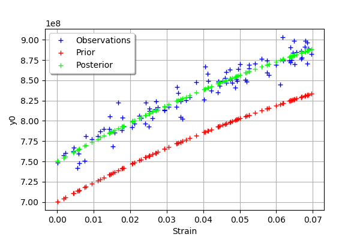
We see that there is a good fit after calibration, since the predictions after calibration (i.e. the green crosses) are close to the observations (i.e. the blue crosses).
[59]:
mypcr.drawObservationsVsPredictions()
[59]:
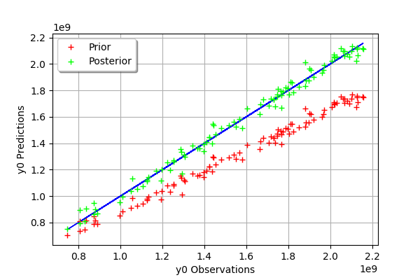
We see that there is a much better fit after calibration, since the predictions are close to the diagonal of the graphics.
The observation error is predicted by bootstraping the problem at the posterior.
[60]:
observationError = calibrationResult.getObservationsError()
observationError
[60]:
Normal(mu = 0, sigma = 1e+07)
This can be compared to the residuals distribution, which is computed at the posterior.
[61]:
mypcr.drawResiduals()
[61]:
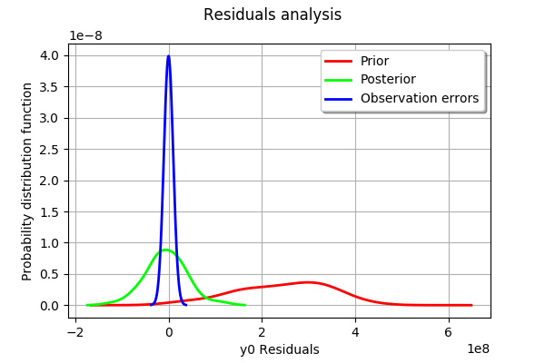
The analysis of the distribution of the residuals (the blue line) shows that the distribution is approximately centered on zero and symmetric. This indicates that the calibration performed well. Moreover, the distribution of the residuals is close to being gaussian.
The prior observation error distribution (in green) is much narrower than the actual residuals distribution. This shows that the prior observation error distribution underestimated the actual errors.
[62]:
_ = mypcr.drawParameterDistributions()
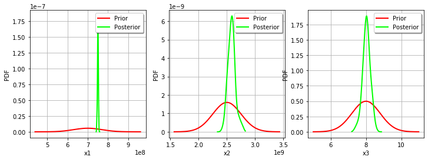
We see that the prior and posterior distribution are close to each other, but not superimposed: the observations significantly brought information during the calibration.